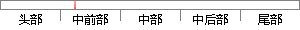

在欧美等互联网比较发达的国家或者地区，在线问卷调查已经被普遍应用于市场调查、民意调查、企业内部调查、网络选举以及学术研究领域。
片段位置图

相似结果|
相似片段 1：日韩等互联网发达国家已经相当普遍，在市场调查、民意调查、企业内部调查、网络选举以及学术研究领域得到2广泛的应用。据不完全统计，欧洲、美洲以及日韩等地区几乎实现了全员参与的问卷调查。在技术层面上，日本和
|
※ 片段修改建议 ※
近似词参考：- 欧美：泰西
- 国家：国度
- 或者：或 大概
- 地区：地域 区域
- 已经：已
- 普遍：遍及 广泛
- 调查：查询拜访 观察
- 网络：收集
- 选举：推举
- 以及：和
- 领域：范畴
系统自动生成语句：在泰西等互联网比较发达的国度或地域，在线问卷查询拜访已被遍及应用于市场查询拜访、民意查询拜访、企业内部查询拜访、收集推举和学术研究范畴。
注：本片段修改建议为系统自动生成，仅供参考。